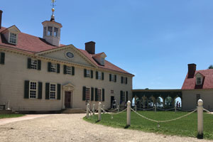
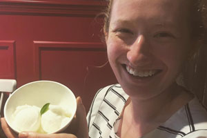
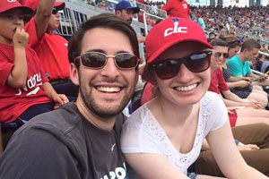
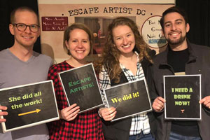
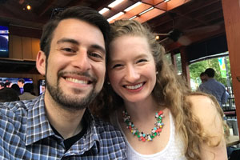

Our guide to D.C.
We want to help you make the most of your time in the nation’s capital, so we’ve shared some of our favorite things to do in the city below.
🏛Sightseeing 🏟Sports and activities 🍴Food
In Virginia

🏛 The Mount Vernon estate, home to America’s first president, is worth a visit. Our reception will take place on the grounds at the Mount Vernon Inn, but you’ll need a ticket to visit the historic home, stables and gardens during the week or between Mass and the reception. Washington’s home is just as stately as the man himself. You can almost imagine Washington’s relief in coming home to sit under his own vine and fig tree.
🏛 The Torpedo Factory Arts Center in Old Town Alexandria is an actual historic torpedo factory that has been converted into an art studio and gallery for dozens of local artists.
🏛 King Street in Alexandria has plenty of cute shops and leads down to the picturesque waterfront. If it’s too hot to walk, hop on the free trolley!
🏟 The Potomac Riverboat Company runs water taxi service from Old Town Alexandria (at the end of King Street) to National Harbor, Georgetown, and Navy Yard in D.C. for baseball and soccer games.
🏟 The Mount Vernon Trail in Old Town Alexandria is nearby the Sheraton and Holiday Inn. Jump on the trail for a morning run or bike ride!

🍴 Hank’s Pasta Bar, across the street from the Sheraton in Old Town Alexandria, boasts delicious handmade pasta, great drinks and Lexi’s favorite lemon sorbet this side of the Atlantic!
🍴 T.J. Stone’s in Old Town Alexandria for great American food. Was able to accomodate large parties with advance reservation.
🍴 Murphy’s Grand Irish Pub was a fun place for a Guinness and nightly live music with no cover charge.
In Washington, D.C. — Capitol Hill and Navy Yard
🏛 On Capitol Hill, first-time visitors and D.C. veterans alike can find something very Washington to do, including a tour of Capitol Building — you can reach out to your senator or representative to set one up. The Library of Congress, the Supreme Court and the U.S. Botanic Gardens are also just steps away.

🏟 A Washington Nationals baseball game at Nats Park in Navy Yard. The team is playing the Arizona Diamondbacks on Thursday and Friday evening.
🏟 The Evening Parade at the Marine Barracks on summer Friday nights is free to the public, but requires advanced reservations. The United States Marine Band and Silent Drill Platoon put their precision skills on display in this one-hour and 15 minute performance.

🏟 Escape Artist DC is easily the best escape room experience we’ve had — and we’ve been to quite a few! All the puzzles and challenges are designed in-house and have varied levels of difficulty. Try to beat our best time of 42 minutes!
🍴 Firehook Bakery on Capitol Hill, is one of our go-to brunch spots after Mass on Sunday. Make sure to try a breakfast sandwich on a croissant.
🍴 Ted’s Bulletin in Washington, is a classic D.C. spot serving breakfast all day. They are famous for their homemade pop tarts and boozy milkshakes. There are several locations around the area.

🍴 The Brig in Navy Yard is a great outdoor beer garden with plenty of local beers and nearly as many dogs!
🍴 Bluejacket in Navy Yard is a hot spot near the water for dinner and beer brewed in-house. Our favorite spot to bring our parents. Make sure you leave room for dessert across the street at Ice Cream Jubilee!
🍴 Ice Cream Jubilee in Navy Yard, is our favorite ice cream spot in the city. They have great flavors — our regulars are Cookies & Cookie Dough and Banana Bourbon Caramel.
Elsewhere in Washington, D.C.
🏛 The Newseum in Washington, D.C. is a giant monument to all things journalism. We especially love seeing front pages from around the country, the interactive broadcasting exhibit, and the FBI experience. Go see it before it closes up shop on Pennsylvania Avenue. There are also lots of other museums nearby, including the new National Law Enforcement Museum.
🏛 The National Portrait Gallery in downtown Washington, D.C., is Lexi’s favorite Smithsonian museum. It features portraits of all of the presidents on the main floor and more modern photography and portraiture exhibits elsewhere in the building.
🏛 Georgetown features upscale shopping and restaurants. If you have some time, walk over the Key Bridge and explore Theodore Roosevelt Island. 🍴For food, we like Farmers, Fishers, Bakers at the waterfront and Baked & Wired cupcakes nearby.
🏛 The National Mall and free Smithsonian museums in Washington. Just south of the mall, you can rent a paddle boat and cruise around the Tidal Basin for views of the Jefferson Memorial and Martin Luther King, Jr. Memorial. Careful — it’s a leg workout!

🏟 Rock Creek Park, is an outdoor gem in the middle of the city. Stop by the Boulder Bridge on Beach Drive to see where we got engaged! The National Zoo is also within the park.